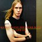
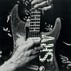
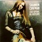
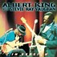
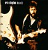
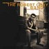
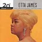

|  Kenny Wayne Shepherd Band : "Live On"" border="0" align="">      |
Планируются к выпуску |
Новые альбомы |
Повторный выпуск |
| February 29, |
"Blues Across America: "Trackin' the Spirit" - |
"Best Blues Album in the World Ever" [Pointblank] - "Shepherd of the City" |
| March 14, 2000 |
"Chers Amis" [Rounder] - "Living Legends" - |
"On the Prowl" Walter 'Wolfman' Washington [Rounder] |
| March 21, 2000 |
"Soft Place to Land" "Snake Bite" - |
"The Mountain" Mick Clarke Burnside |
| March 28, 2000 |
"The Devil's Companion" - "Fire Down Under the Hill" - "Roots Stew" - "Knocking at Your Door" - "Sam's Big Rooster" - |
|
Бывшие новости |
Январь-Февраль 1999 |
Март 1999 |
Ноябрь-Декабрь 1999
Январь 2000 |
Февраль 2000 |
Март 2000 |
Апрель 2000